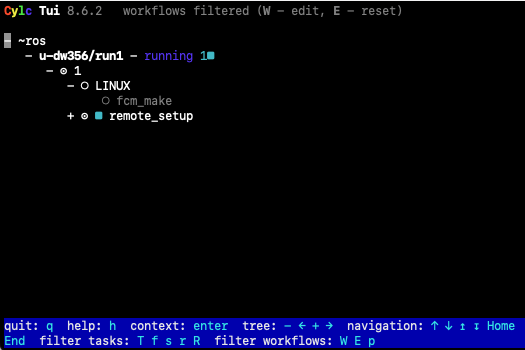

4. Running a UM workflow on ARCHER2
Aims
- In this section you will learn:
How to run and monitor a standard UM workflow
Where to find the job output and error files
Where to find the UM model output
4.1. ARCHER2 architecture
In common with many HPC systems, ARCHER2 consists of different types of processor nodes:
Login nodes: This is where you land when you ssh into ARCHER2. Typically these processors are used for file management tasks.
Compute / batch nodes: These make up most of the ARCHER2 system, and this is where the model runs.
Serial / post-processing nodes: This is where less intensive tasks such as compilation and archiving take place.
ARCHER2 has three file systems:
/home: This is relatively small and is only backed up for disaster recovery.
/work: This is much larger, but is not backed up. Note that the batch nodes can only see the work file system. It is optimised for parallel I/O and large files.
/a2fs-nvme: This is high performance solid state storage configured as temporary SCRATCH storage where files not accessed in the last 28 days are automatically deleted. It is not backed up.
Further Reading
Consult the ARCHER2 website for more information: http://www.archer2.ac.uk
4.2. Running a Standard Workflow
To demonstrate how to run the UM through Rose we will start by running a standard N48 workflow at UM13.8.
Tip
Cylc command reference sheet provides a summary of all major cylc commands which you will find useful to refer to throughout the remaining chapters:
Copy the suite
In
rosie golocate the suite with idx u-dp063 owned by grenvillelister.Right click on the suite and select Copy Suite.
This copies an existing suite to a new suite id. The new suite will be owned by you. During the copy process a wizard will launch for you to edit the suite discovery information, if you wish.
A new suite will be created in the MOSRS rosie-u suite repository and will be checked out into your ~/roses directory.
Edit the suite configuration
Open your new suite in the Rose config editor GUI.
Before you can run the workflow you need to change the userid, queue, account code and reservation:
Click on suite conf –> template variables in the left hand panel
Set
HPC_USER(that’s your ARCHER2 username)
If following the tutorial as part of an organised training event:
Set
HPC_ACCOUNTto ‘n02-training’Set
HPC_QUEUEto ‘standard’Ensure
RESERVATIONis set to TrueSet
HPC_RESERVATIONto be the reservation code for today. (e.g. ‘n02-training_1673632’)
If following the tutorial as self-study:
Set
HPC_ACCOUNTto the budget code for your project. (e.g. ‘n02-cms’)Set
HPC_QUEUEto ‘short’Set
RESERVATIONto False
Notes
Quotes around the variable values are essential otherwise the workflow will not run.
In normal practice you submit your workflow to the parallel queue (either short or standard) on ARCHER2.
For organised training events, we use processor reservations, whereby we have exclusive access to a prearranged amount of ARCHER2 resource. Reservations are specified by adding an additional setting called the reservation code; e.g. n02-training_226.
Save the suite (File > Save or click the down arrow icon)
Close the rose edit window.
Run the workflow
Run the following commands to submit the workflow:
puma2$ cd ~/roses/u-dp063
puma2$ cylc vip
This validates, installs and runs the workflow. The standard workflow will build, reconfigure and run the UM.
Tip
If no argument is supplied to cylc vip, the current working directory is used as the source directory. Alternatively, you can supply a workflow source name e.g. cylc vip u-dp063
Further Information
cylc vip is short for validate, install and play (run) the workflow.
Validate checks the suite definition for errors.
Install creates the run directory structure along with some service files.
Play runs the workflow.
4.3. Monitor the running workflow
To help you monitor and control running workflows Cylc offers 3 tools:
A web based graphical user interface (Cylc GUI)
A terminal-based user interface (Cylc TUI)
A comprehensive command line interface (Cylc CLI)
See also
For full details see the Cylc user interfaces documentation
These pages give information on how to navigate around both GUIs and indicates what all the task & job icons indicate.
Using the Cylc User Interfaces
We will take some time here to explore the Cylc User Interfaces
Using the Cylc web GUI
The Cylc GUI is a monitoring and control application that runs in a web browser. The Cylc GUI has different views you can use to examine your workflows, including a menu to allow you to switch between workflows. You only need to have one instance of the Cylc GUI open.
To use the Cylc GUI for workflows on ARCHER2 you need to do some setup first. Please follow the “Setting up the Cylc GUI” instructions in Chapter 1.
To start the Cylc UI, in your local desktop terminal window type puma-ui and you should see similar to the following:
$ puma-ui
#################################################################################
------------------------------Welcome to PUMA2-----------------------------------
#################################################################################
[C 2026-01-22 08:25:30.367 ServerApp]
To access the server, open this file in a browser:
file:///home/n02/n02/ros/.cylc/uiserver/info_files/jpserver-1094362-open.html
Or copy and paste one of these URLs:
http://localhost:20522/cylc?token=700ab2be96800177d03df31b8140857cab02b9632af45a1d
http://127.0.0.1:20522/cylc?token=700ab2be96800177d03df31b8140857cab02b9632af45a1d
[W 2026-01-22 08:25:44.242 ServerApp] The websocket_ping_timeout (999999) cannot be longer than the websocket_ping_interval (290).
Setting websocket_ping_timeout=290
Copy and paste one of the URLs listed into your web browser and you should then see your Cylc GUI load.

Using the Cylc TUI
This is a command line version of the GUI. It can be used to monitor and control any workflows running under your user account, trigger tasks, access log files and perform other common activities.
To start the Cylc TUI on PUMA2 type:
puma$ cylc tui <workflow_name>
You interact with the TUI by selecting a task name, either by using the up & down arrows or the mouse and then pressing the <Enter> key to bring up a menu of actions.
{kind=link}

Please take some time now to familiarise yourself with both the Cylc TUI & Cylc GUI.
4.4. Looking at the queues on ARCHER2
It’s likely that whilst you have been looking at the GUIs your workflow will have finished. If this is the case run it again before continuing with this section.
Now, let’s log into ARCHER2 and learn how to look at the queues.
Run the following command:
squeue -u <archer2-user-name>
This will show the status of jobs you are running. You will see output similar to the following:
ARCHER2> squeue -u ros
JOBID PARTITION NAME USER ST TIME NODES NODELIST(REASON)
148599 standard u-cc519. ros R 0:11 1 nid001001
At this stage you will probably only have a job running or waiting to run in the serial queue. Running squeue will show all jobs currently on ARCHER2, most of which will be in the parallel queues.
Once your workflow has finished running the Cylc GUI/TUI will go blank and you should get a message in the bottom left hand corner saying Stopped with succeeded.
Tip
Cylc is set up so that it polls ARCHER2 to check the status of the task, every 5 minutes. This means that there could be a maximum of 5 minutes delay between the task finishing on ARCHER2 and the Cylc GUI/TUI being updated. If you see that the task has finished running but Cylc hasn’t updated then you can manually poll the task by selecting it and then selecting Poll from the pop-up menu.
4.5. Standard Workflow Output
The output from a standard workflow goes to a variety of places, depending on the type of the file. On ARCHER2 you will find all the output from your run under the directory ~/cylc-run/<workflow-name>, where <workflow-name> is the name of the workflow (e.g. u-dp063). This is actually a symbolic link to the equivalent location in your /work directory (E.g. /work/n02/n02/<username>/cylc-run/<workflow-name>.
Task output
On PUMA2, navigate to the cylc-run directory for the workflow:
cd ~/cylc-run/<workflow-name>
ls
By default, cylc will create a new numbered run directory each time you run the workflow:
puma2$ cd ~/cylc-run/u-dp063
puma2$ ls
_cylc-install/ run1/ run2/ run3/ runN@
The most recent runX directory is symlinked to runN.
Go to the workflow you have just run and into the log directory:
cd runN/log/job/1
ls
You will see directories for each of the tasks in the workflow. For this workflow there are 5 tasks: remote_setup (ARCHER2 directory setup), fcm_make (code extraction), fcm_make2 (compilation), recon & atmos. Try looking in one of the task directories:
cd recon/NN
ls
Here NN is a symbolic link created by Rose pointing to the output of the most recently run. You will see several files in this directory. The job.out and job.err files are the first places you should look for information when tasks fail.
Tip
You can use the command line to view scheduler or job logs without having to find them yourself on the filesystem:
cylc cat-log <workflow-name>
cylc cat-log <workflow-name//<cycle-point/<task-name>
Compilation output
The output from the compilation is stored on the host upon which the compilation was performed. The output from fcm_make is inside the directory containing the build, which is inside the share subdirectory.
~/cylc-run/<workflow-name>/run<X>/share/fcm_make/fcm-make2.log
If you come across the word “failed”, chances are your model didn’t build correctly and this file is where you’d search for reasons why.
UM standard output
The output from the UM scripts and the output from PE0 of the model are written to the job.out and job.err files for that task. Take a look at the job.out for the atmos task, by opening the following file:
~/cylc-run/<workflow-name>/run<X>/log/job/1/atmos/NN/job.out
Did the linear solver for the Helmholtz problem converge in the final timestep?
Job Accounting
The sacct command displays accounting data for all jobs that are run on ARCHER2. sacct can be used to find out about the resources used by a job. For example; Nodes used, Length of time the job ran for, etc. This information is useful for working out how much resource your runs are using. You should have some idea of the resource requirements for your runs and how that relates to the annual CU budget for your project. Information on resource requirements is also needed when applying for time on the HPC.
Let’s take a look at the resources used by your copy of u-dp063 run.
Locate the SLURM Job Id for your run. This is a 6 digit number and can be found in the
job.statusfile in the cylc task log directory. Look for the lineCYLC_BATCH_SYS_JOB_ID=and take note of the number after the=sign.
Run the following command:
sacct --job=<slurm-job-id> --format="JobID,JobName,Elapsed,Timelimit,NNodes"
Where <slurm-job-id> is the number you just noted above. You should get output similar to the following:
ARCHER2-ex> sacct --job=204175 --format="JobID,JobName,Elapsed,Timelimit,NNodes"
JobID JobName Elapsed Timelimit NNodes
------------ ---------- ---------- ---------- --------
204175 u-cc519.a+ 00:00:23 00:20:00 1
204175.batch batch 00:00:23 1
204175.exte+ extern 00:00:23 1
204175.0 um-atmos.+ 00:00:14 1
The important line is the first line.
How much walltime did the run consume?
How much time did you request for the task?
How many CUs (Accounting Units) did the job cost?
Hint
1 node hour currently = 1 CU. See the ARCHER2 website for information about the CU.
There are many other fields that can be output for a job. For more information see the Man page (man sacct). You can see a list of all the fields that can be specified in the --format option by running sacct --helpformat.